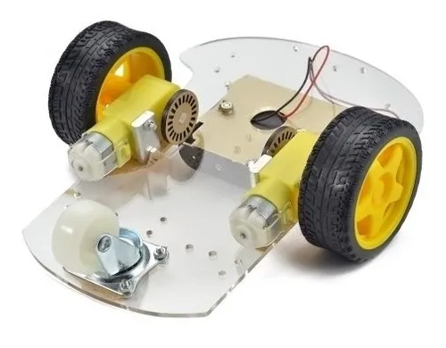
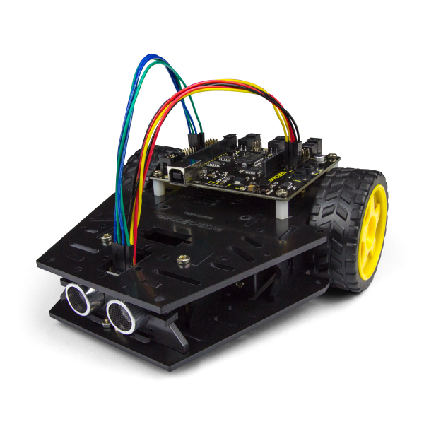
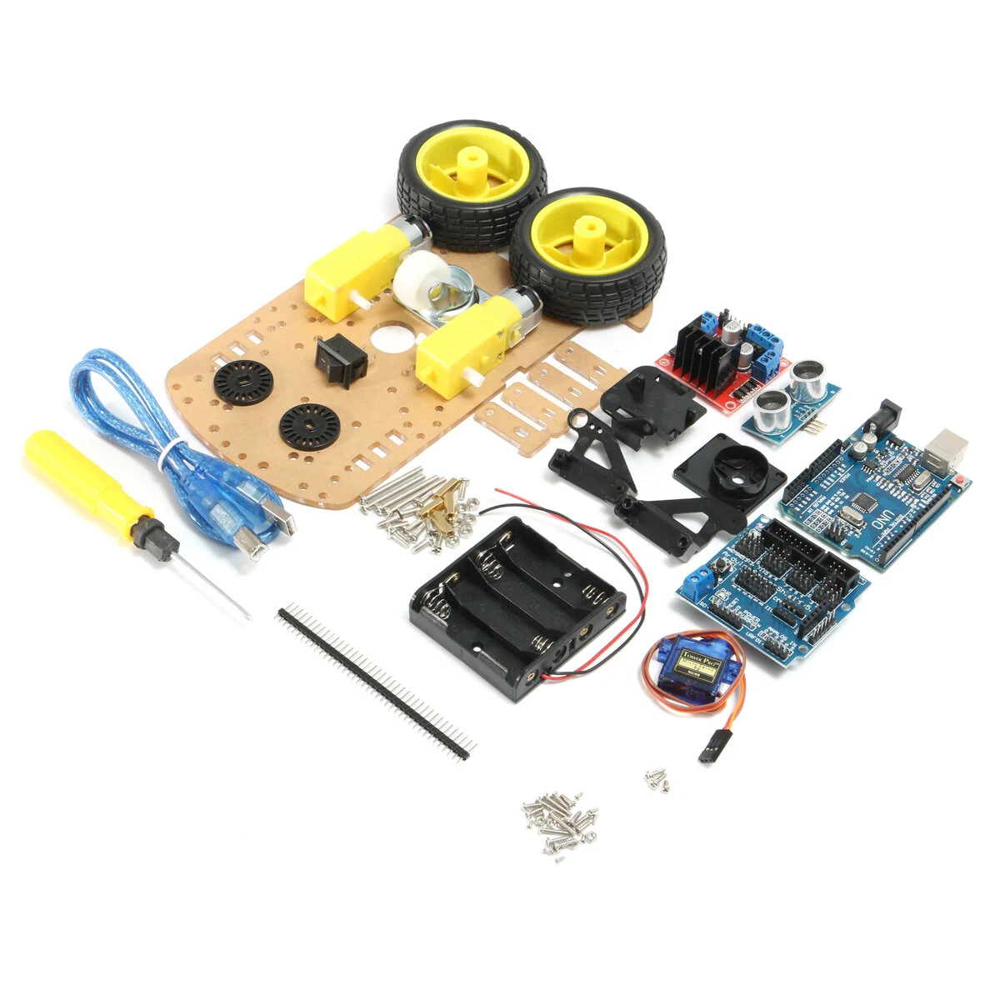
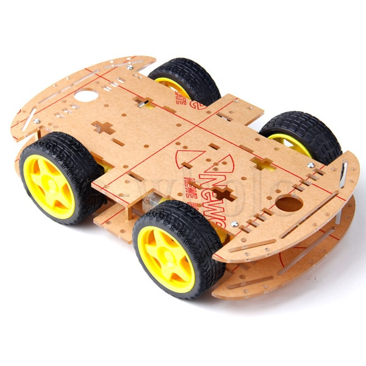
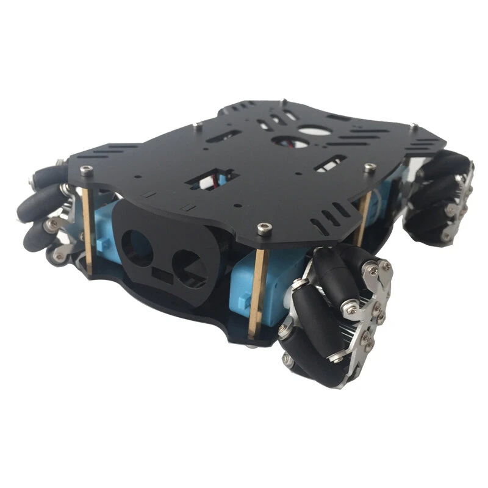
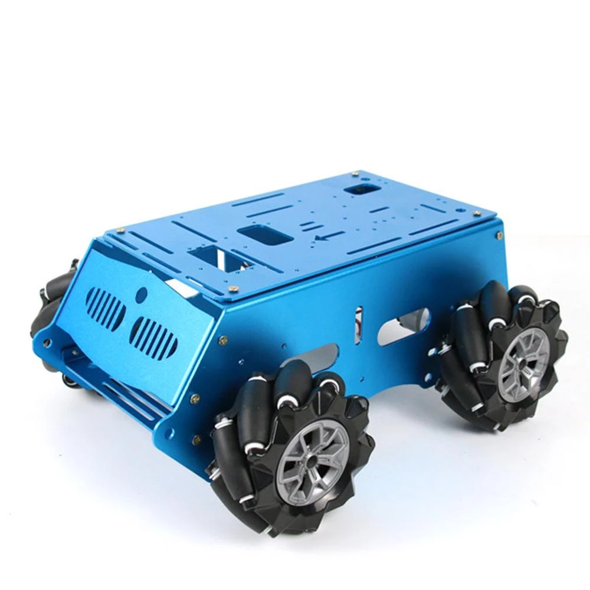
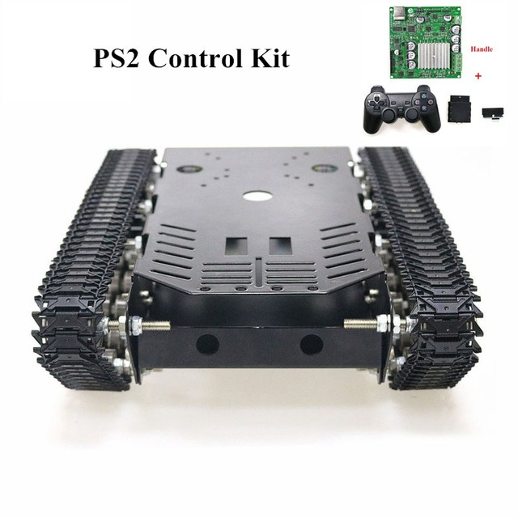

Um dos maiores interesses na robótica são os carrinhos, estes despertam o interesse de adolescentes, jovens e até de adultos. Geralmente são comprados em kits e controlados pelo Arduino Uno R3. Existem outras possibilidades, como o Arduino Mega, Raspberry PI, etc.
Basicamente são encontrados dois tipos: 2WD e 4WD, definido pela quantidade de rodas com tração.
Estes são os mais comuns e baratos. Partindo de modelos básicos até alguns mais avançados. Têm duas rodas para tracionar, e para manter o equilíbrio, têm uma roda louca sem tração.
  Estes são um pouco mais caros. Pois por terem quatro rodas que tracionam, requerem mais motores e rodas com tração. Os preços variam muito, pois os componentes (módulos, sensores, shields) podem variar muito de kit para kit.
  Existem os com esteira também, mas são mais caros, chegando até a custar mais de R$ 2000,00 o kit.
